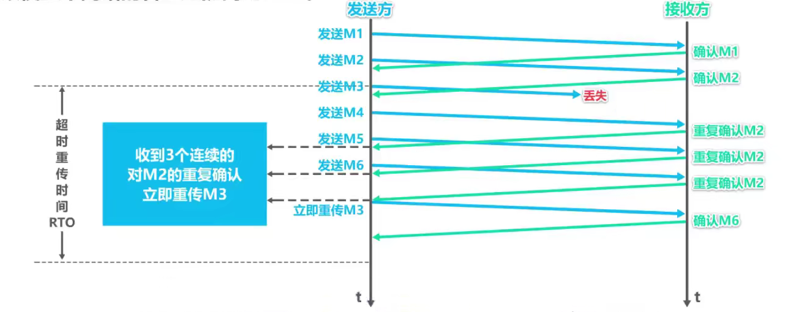

运输层
物理层、数据链路层以及网络层它们共同解决了将主机通过异构网络互联起来所面临的问题，实现了主机到主机的通信。但实际上在计算机网络中进行通信的真正实体是位于通信两端主机中的进程。如何为运行在不同主机上的应用进程提供直接的通信服务是运输层的任务，运输层协议又称为端到端协议。
运输层
概述
物理层、数据链路层以及网络层它们共同解决了将主机通过异构网络互联起来所面临的问题，实现了主机到主机的通信。但实际上在计算机网络中进行通信的真正实体是位于通信两端主机中的进程。如何为运行在不同主机上的应用进程提供直接的通信服务是运输层的任务，运输层协议又称为端到端协议。
运输层向高层用户屏蔽下面网络核心的细节（如网络拓扑、所采用的路由选择协议等），它使应用进程看见的就好像是在另个运输层实体之间有一条端到端的逻辑通信信道。根据应用需求的不同，因特网的运输层为应用层提供了两种不同的运输协议，即面向连接的TCP和无连接的UDP。
复用与分用
发送方的某些应用进程所发送的不同应用报文，在运输层使用UDP协议进行封装，称为UDP复用；而另一些应用进程所发送的不同应用报文，在运输层使用使用TCP协议进行封装，这称为TCP复用；运输层使用端口号来区分不同的应用进程；不管是使用运输层的UDP封装成的UDP用户数据报，还是使用TCP协议封装成的TCP报文段，在网络层都需要使用IP协议封装成IP数据报，称为IP复用。
IP数据报首部中协议字段的值，用来表明IP数据报的数据载荷部分，封装的是何种协议数据单元。取值为6表示封装的是TCP报文段；取值为17表示封装的是UDP用户数据报。
接收方的网络层收到IP数据报后进行IP分用。若IP数据报首部中协议字段的值为17，则把IP数据报的数据载荷部分所封装的UDP用户数据报上交运输层UDP；若协议字段值为6，则把IP数据报的数据载荷部分所封装的TCP报文段上交运输层的TCP。运输层对UDP用户数据报进行UDP分用，对TCP报文段进行TCP分用。也就是根据端口号，将它们交付给上层相应的应用进程。
端口号
概念
运行在计算机上的进程使用进程标识符PID来标志。因特网上的计算机并不是使用统一的操作系统，不同的操作系统（Windows,Linux,Mac OS）又使用不同格式的进程标识符。为了使运行不同操作系统的计算机的应用进程之间能够进行网络通信，就必须使用统一的方法对TCP/IP体系的应用进程进行标识。
TCP/IP体系的运输层使用端口号来区分应用层的不同应用进程；端口号使用16比特标识，取值范围0-65535。
- 熟知端口号：0-1023，IANA把这些端口号指派给了TCP/IP体系中最重要的一些应用协议，例如：FTP使用21/20,HTTP使用80，DNS使用53.
- 登记端口号：1024-49151，为煤油熟知端口号的应用程序使用。使用这类端口号必须在IANA按照规定的手续登记，以防止重复。例如：Microsoft RDP微软远程桌面使用的端口号是3389.
- 短暂端口号：49152-65535，留给客户端进程选择暂时使用。当服务器进程收到客户进程的报文时，就知道了客户进程所使用的的动态端口号。通信结束后，这个端口号可供其他客户进程以后使用。
端口号只具有本地意义，即端口号只是为了表示计算机应用层中的个进程，在因特网中，不同计算机中的相同端口号是没有联系的。
举例
用户PC，DNS服务器，Web服务器通过交换机进行互联，他们处于同一个以太网中。假设这是Web服务器的域名，DNS服务器中记录有该域名所对应的IP地址。我们在用户PC中使用网页浏览器访问Web服务器的内容。在网页浏览器的地址栏中输入Web服务器域名，用户PC中的DNS客户端进程会发送一个DDNS查询请求报文，其内容为(域名所对应的IP地址是什么？),DNS查询请求报文需要使用运输层的UDP协议，封装成UDP用户数据报，其首部中的源端口字段的值，在短暂端口号49151-65535中挑选一个未被占用的，用来表示DNS客户端进程，例如49152。目的端口字段的值设置为53（DNS服务器端进程所使用的熟知端口号）。
之后将UDP用户数据报封装在IP数据报中，通过以太网发送给DNS服务器，DNS服务器收到该数据报后，从中解封出UDP用户数据报。UDP首部中的目的端口号为53，这表明应将该UDP用户数据报的数据载荷部分，也就是DNS查询请求报文交付给本服务器中的DNS服务器端进程。DNS服务器端进程解析DNS查询请求报文内容，然后按其要求查找对应的IP地址。之后，会给用户PC发送DNS响应报文，其内容为(域名所对应的IP地址是192.168.0.3)。DNS响应报文需要使用运输层的UDP协议封装成UDP用户数据报，其首部中源端口字段的值设置为熟知端口号53，表明这是DNS服务器端进程所发送的UDP用户数据报；目的端口字段的值设置为49152，这是之前用户PC中发送DNS查询请求报文的DNS客户端进程所使用的短暂端口号。
之后，将UDP用户数据报封装在IP数据报中，通过以太网发送给用户PC。用户PC收到该数据报后，从中解封出UDP用户数据报。UDP首部汇总的目的端口号为49152，这表明应将该UDP用户数据报的数据载荷部分也就是DNS响应报文交付给用户PC中的DNS客户端进程。DNS客户端进程解析DNS响应报文的内容，就可知道自己之前所请求的Web服务器的域名所对应的IP地址为192.168.0.3。
现在用户PC中的HTTP客户端进程可以向Web服务器发送HTTP请求报文了。其内容为“首页内容是什么？”HTTP请求报文需要使用运输层的TCP协议封装成TCP报文段，其首部中的源端口字段的值在短暂端口号49151-65535中挑选一个未被占用的，用来表示HTTP客户端进程。例如仍然使用之前用过的49152.目的端口字段的值设置为80，这是HTTP服务器端进程所使用的熟知端口号。
之后，将TCP报文段封装在IP数据报中，通过以太网发送给Web服务器。Web服务器收到该数据报后，从中解封出TCP报文段。TCP首部中的目的端口号为80，这表明应该将TCP报文段的数据载荷部分，也就是HTTP请求报文交付给本服务器中的HTTP服务端进程。HTTP服务器端进程解析HTTP请求报文的内容，然后按其要求查找首页内容。之后，会给用户PC发送HTTP响应报文，其内容是HTTP客户端所请求的首页内容。HTTP响应报文需要使用运输层的TCP协议封装成TCP报文段，其首部中的源端口字段的值设置为熟知端口号80，表明这是HTTP服务端进程所发送的TCP报文段；目的端口字段的值设置为49152，这是之前用户PC中发送HTTP请求报文的HTTP客户端进程，所使用的短暂端口号。
之后将TCP报文段封装在IP数据报中通过以太网发送给用户PC。用户PC收到数据报后，从中解封出TCP报文段。TCP首部中的目的端口号为49152，这表明应将该TCP报文段的数据载荷部分也就是HTTP响应报文交付给用户PC中的HTTP客户端进程。HTTP客户端进程解析HTTP响应报文的内容，并在网页流浪器进行显示。
UDP和TCP对比
- UDP无连接；TCP面向连接
使用UDP的通信双方，可以随时发送数据；使用TCP的通信双方，在进行数据传输之前，必须使用“三报文握手”来建立TCP连接。TCP连接建立成功后才能进行数据传输。数据传输结束后，必须使用“四报文挥手”来释放TCP连接。
- UDP支持单播、多播以及广播；TCP支持单播
- UDP面向应用报文；TCP面向字节流
UDP对应用进程交下来的报文既不合并也不拆分，而是保留这些报文的边界；发送方的TCP把应用进程交付下来的数据块仅仅看做是一连串的、无结构的字节流，TCP并不知道这些待传送的字节流的含义，仅将它们编号并存储在自己的发送缓存中。TCP根据发送策略从发送缓存中提取一定数量的字节，构建TCP报文段并发送。接收方的TCP一方面从接收到的TCP报文段中，取出数据载荷部分并存储在接收缓存中；一方面将接收缓存中的一些字节交付给应用进程。TCP不保证接收方应用进程所收到的数据块与发送方应用进程
所发出的数据块具有对应大小的关系。但接收方应用进程收到的字节流必须和发送方应用进程发出的字节流完全一样。也就是说TCP是面向字节流的，这正是TCP实现可靠传输、流量控制以及拥塞控制的基础。
- UDP向上层提供无连接不可靠传输服务；TCP向上层提供面向连接的可靠传输服务
发送方给接收方发送UDP用户数据报，若传输过程中用户数据报受到干扰而产生误码，接收方UDP可以通过该数据报首部中的校验和字段的值检查出产生误码的情况。但仅仅丢弃该数据报，其他什么也不做。发送方给接收方发送UDP数据报，如果该数据报被因特网中的某个路由器丢弃了，发送方UDP不做任何处理，因为UDP向上层提供的是无连接不可靠的传输服务。因此UDP用户数据报出现的误码和丢失等问题，UDP并不关心。基于UDP这个特点，UDP适用于实时应用，例如IP电话、视频会议等。
尽管网际层中的IP协议向上层提供的是无连接不可靠的传输服务。也就是说，IP数据报可能在传输过程中出现丢失或误码。但只要运输层使用TCP协议，就可向其上层提供面向连接的可靠传输服务。使用TCP协议的收发双方基于TCP连接的可靠信道进行数据传输。不会出现误码、丢失、乱序以及重复等传输差错。
TCP适用要求可靠传输的应用，例如文件传输等。
- UDP用户数据报首部仅8个字节；TCP报文首部最小20字节最大60字节
一个UDP用户数据报由首部和数据载荷两部分构成。首部仅有4个字段，每个字段长度为2个字节。由于UDP不提供可靠传输服务，它仅仅在网际层的基础上，添加了用于区分应用进程的端口；
一个TCP报文段由首部和数据载荷两部分构成，首部其最小长度为20字节，最大60字节，这是因为TCP要实现可靠传输、流量控制、拥塞控制等服务。
TCP的流量控制
概念
流量控制就是让发送方的发送速率不要太快，要让接收方来得及接收。利用滑动窗口机制可以很方便地在TCP连接上实现对发送方的流量控制。
举例

假设主机A和B是因特网上的两台主机，它们之间已经建立了TCP连接，A给B发送数据，B对A进行流量控制。假设主机A发送的每个TCP数据报文段可携带100字节数据。因此图中每个小个子表示100个字节数据的序号。在主机A和B建立TCP连接时，B告诉A：“我的接收窗口为400”。因此，主机A将自己的发送窗口也设置为400。这意味着主机A在未收到主机B发来的确认时，可将序号落入发送窗口中的全部数据发送出去。
主机A将发送窗口内序号1-100的数据封装成一个TCP报文段发送出去。发送窗口内容还有300字节可以发送。seq是TCP报文段首部中的序号字段，取值1表示TCP报文段数据载荷的第一个字节的序号是1.
DATA表示TCP数据报文段。主机A将发送窗口内序号101-200的数据封装成一个TCP报文段发送出去。发送窗口内还有200字节可以发送。主机A将发送窗口内序号201-300的数据封装成一个TCP报文段发送出去。但该报文段在传输过程中丢失了，主机A发送窗口内还有100字节可以发送。主机B对主机A所发送的201号以前的数据进行累计确认。并在该可累计确认中将窗口字段的值调整为300，也就是对主机A进行流量控制。ACK是TCP报文段首部中的标志位，取值1表示这是一个TCP确认报文段。ack是TCP报文段首部中的确认号字段，取值201表示序号201之前的数据已全部正确接收，现在希望收到序号201及其后续数据。rwnd是TCP报文段首部中的窗口字段，取值300表示自己的接收窗口大小为300.
主机A收到该累计确认后，将发送窗口向前滑动，使已发送并确认的这些数据的序号移出发送窗口。由于主机B在该累计确认中将自己的接收窗口调整为了300。因此主机A相应地将自己的发送窗口调整为300.
目前主机A发送的序号为201-500，也就是主机A还可以发送这300字节。其中201-300号字节是已发送的数据，若重传计时器超时，它们会被重传。301-400号字节以及401-500号字节还未被发送。可被分别封装在一个TCP报文段中发送。主机A现在可发送缓存中序号1-200的字节数据全部删除了，因为已经收到了主机B对它们的累计确认。
主机A将发送窗口内序号301-400的数据封装成一个TCP报文段发送出去。发送窗口内容还有100字节可以发送。主机A将发送窗口内序号401-500的数据封装成一个TCP报文段发送出去。至此，序号落在发送窗口内的数据已经全部发送出去了，不能再发送新数据了。
现在发送窗口内序号201-300这100个字节数据的重传计时器超时了。主机A将它们重新封装成一个TCP报文段发送出去。暂时不能发送其他数据。主机B收到该重传的TCP报文段后，对主机A所发送的501号以前的数据进行累计确认。并在该累计确认中将窗口字段的值调整为100，这是主机B对主机A进行的第二次流量控制。
主机A收到该累计确认后，将发送窗口向前滑动，使已发送并收到确认的这些数据的序号移出发送窗口。由于主机B在该累计确认中将自己的接收串口调整为了100.因此主机A相应地将自己的发送窗口调整为100.目前主机A发送窗口内容的序号为501-600.也就是主机A还可以发送这100字节。主机A现在可将发送缓存中序号201-500的字节数据全部删除了，因为已经收到了主机B对它们的累计确认。主机A将发送窗口内序号501-600的数据封装成一个TCP报文段发送出去。至此序号落在发送窗口内的数据全部发送出去了，不能再发送新数据了。主机A所发送的601号以前的数据进行累计确认。并在该累计确认中将窗口字段的值调整为0，这是主机B对主机A进行的第三次流量控制。
主机A收到该累计确认后，将发送窗口向前滑动，使已发送并收到确认的这些数据序号移出发送窗口。由于主机B在该累计确认中将自己的接收窗口调整了0。因此主机A相应地将自己的发送窗口调整为0.目前，主机A不能再发送一般的TCP报文段了。主机A现在可将发送缓存中序号501-600的字节数据全部删除了，因为已经收到了主机B对它们的累计确认。
假设主机B向主机A发送了零窗口的报文段后不久，主机B的接收缓存又有了一些存储空间。于是，主机B向主机A发送了接收窗口等于300的报文段，然而这个报文段在传输过程中丢失了。主机A一直等待主机B发送的非零窗口的通知，主机B也一直等待主机A发送的数据。
如果不采取措施，这种互相等待而形成的死锁局面将一直持续下去，为了解决这个问题TCP为每一个连接设有一个持续计时器，只要TCP连接的一放收到对方的零窗口通知，就启动持续及时器。若持续计时器超时，就发送一个零窗口探测报文，仅携带一字节的数据。而对方在确认这个探测报文段时，给出自己现在的接收窗口值。如果接收窗口仍然为0，那么收到这个报文段的一方就重新启动持续及时器；如果接收窗口不是0，那么死锁的局面就可以被打破了。
在本例中，主机A收到零窗口通知时，就启动一个持续计时器。当持续计时器超时，主机A立刻发送一个仅携带一字节数据的零窗口探测报文段。假设主机B此时的接收窗口又为0了，主机B就在确认这个零窗口探测报文段时，给出自己现在的接收窗口值为0。主机A再次受到零窗口通知，就再次启动一个持续计时器。当持续计时器超时，主机A立刻发送一个零窗口探测报文段。假设主机B此时的接收缓存又有一些存储空间，于是将自己的接收窗口调整为了300，主机B就在确认这个零窗口探测报文段时给出自己现在的接收窗口值为300.这样就打破了死锁的局面。
TCP规定即使接收窗口为0，也必须接收零窗口探测报文段、确认报文段以及携带有紧急数据的报文段。如果零窗口报文段丢失也可打破死锁局面，因为零窗口报文段也有重传计时器，当重传计时器超时后，零窗口报文段会被重传。
TCP拥塞控制
概念
在某段时间，若对网络中某一资源的需求超过了该资源所能提供的可用部分，网络性能就要变坏。这种强开就叫做拥塞。若出现拥塞而不进行控制，整个网络的吞吐量将随输入负荷增大而下降。
网络的资源：在计算机网络中的链路容量（即宽带）、交换结点中的缓存和处理机等，都是网络的资源。

输入负载代表单位时间内输入给网络的分组数量；吞吐量代表单位时间内网络输出的分组数量。具有理想拥塞控制的网络，在吞吐量达到饱和之前，网络吞吐量应等于所输入的负载，故吞吐量曲线是45度的斜线。但当输入负载超过某一限度时，由于网络资源受限吞吐量就不再增长而保持水平线（即吞吐量达到饱和），这就表明输入的负载中有一部分损失掉了。然而实际的网络情况，随着输入负载的增大，网络吞吐量的增长率逐渐减小，也就是在网络吞吐量还未达到饱和时，就已经有一部分的输入分组被丢弃了；当网络的吞吐量明显地小于理想的吞吐量时，网络就进入了轻度拥塞的状态。当输入负载到达某一数值时，网络的吞吐量反而随输入负载的增大而减小，这时网络就进入了拥塞状态。当输入负载继续增大到某一数值时，网络的吞吐量就减小为0，此时网络就无法工作了（死锁）。因此进行拥塞控制是十分必要的，实际的拥塞控制应该尽量接近理想的拥塞控制曲线。
四种拥塞控制算法
举例假定如下条件：
- 数据是单方向传送，而另一个方向只传送确认
- 接收方总是有足够大的缓存空间，因而发送方发送窗口的大小由网络的拥塞程度来决定。
- 以最大报文段MSS的个数为讨论问题的单位，而不是以字节为单位。
慢开始和拥塞避免
TCP发送方一开始使用慢开始算法，让拥塞窗口值从1开始按指数规律增大。当拥塞窗口值增大到慢开始门限值时，停止使用慢开始算法，转而执行拥塞避免算法，让拥塞窗口值按线性加1的规律增大。当发生超时重传时，就判断网络很可能出现了拥塞。采取相应措施，一方面将慢开始门限值更新为发生拥塞窗口值的一半；另一方面将拥塞窗口值减少为1，并重新开始执行慢开始算法。拥塞窗口值又从1开始按指数规律增大。当增大到了新的慢开始门限值时，停止使用慢开始算法，转而执行拥塞避免算法，让拥塞窗口值按线性加1的规律增大。
慢开始是指一开始向网络注入的报文段少，并不是指拥塞窗口cwnd增长速度慢；
拥塞避免并非指完全能够避免拥塞，而是指在拥塞避免阶段将拥塞窗口控制为按线性规律增长，使网络比较不容易出现拥塞。
快重传
慢开始和拥塞避免算法是1988年提出的TCP拥塞控制算法。1990年又增加了两个新的拥塞控制算法（改进TCP的性能），这就是快重传和恢复。有时个别报文段会在网络中丢失，但实际上网络并未发生拥塞；这将导致发送方超时重传，并误认为网络发生了拥塞；发送方把拥塞窗口cwnd又设置为最小值1，并错误地启动慢开始算法，因而降低了传输效率。
所谓快重传就是使发送方尽快进行重传，而不是等超时重传计时器超时再重传。快重传算法可以让发送方尽早知道发生了个别报文段的丢失。
- 要求接收方不要等待自己发送数据时才进行捎带确认，而是要立即发送确认；
- 及时收到了失序的报文段也要立即发出对已收到的报文段的重复确认。
- 发送方一旦收到3个连续的重复确认，就将相应的报文段立即重传，而不是等该报文段的超时重传计时器超时再重传。
- 对于个别丢失的报文段，发送方不会出现超时重传，也就不会误认为出现了拥塞（进而降低拥塞窗口cwnd为1）。使用快重传可以使整个网络的吞吐量提高约为20%。

发送方发送1号数据报文段，接收方收到后给发送方发回对1号报文段的确认。在该确认报文段到达发送方之前，发送方还可以将发送窗口内的2号数据报文段发送出去。接收方收到后给发送方发回对2号报文段的确认。在该确认报文段到达发送方之前，发送方还可以将发送窗口内的3号数据报文段发送出去，但该报文段丢失了，接收方自然不会给发送方发回针对该报文段的确认。发送方还可以将发送窗口内的4好数据报文段发送出去。接收方收到后发现这不是按序到达的报文段，因此给发送方发回针对2号报文段的重复确认（表明我现在希望收到的是3号报文段，但是我没有收到3号报文段，而是收到了未按序到达的报文段）。发送方还可以将发送窗口内的5号数据报文段发送出去，接收方收到后发现不是按序到达的报文段，因此给发送方发回针对2号报文段的重复确认。发送方还可以将发送窗口内的6号数据报文段发送出去。接收方收到后发现不是按序到达报文段，因此给发送方发回针对2号报文段的重复确认。至此发送方会收到3个连续的对2号报文段的重复确认就立即重传3号报文段，接收方收到后，给发送方发回针对6号报文段的确认，这样就不会造成对3号报文段的超时重传，而是提早进行了重传。
快恢复
发送方一旦收到3个重复确认，就知道现在只是丢失了个别的报文段。于是不启动慢开始算法，而是执行快恢复算法；发送方将慢开始门限ssthresh值和拥塞窗口cwnd值调整为当前窗口的一半；开始执行拥塞避免算法。也有的快恢复实现是把快恢复开始时的拥塞窗口cwnd值在增大一些，即等于新的ssthresh+3.
- 既然发送方收到3个重复的确认，就表明有3个数据报文段已经离开了网络；
- 这3个报文段不再消耗网络资源而是停留在接收方的接收缓存中；
- 可见现在网络中不是堆积了报文段而是减少了3个报文段。因此可以适当把拥塞窗口扩大些。
结合四种拥塞算法举例
TCP发送方一开始使用慢开始算法，让拥塞窗口值从1开始按指数规律增大。当拥塞窗口值增大到慢开始门限值时，停止使用慢开始算法，转而执行拥塞避免算法，让拥塞窗口值按线性加1的规律增大。当发生超时重传时，就判断网络很可能出现了拥塞。采取相应措施，一方面将慢开始门限值更新为发生拥塞窗口值的一半；另一方面将拥塞窗口值减少为1，并重新开始执行慢开始算法。拥塞窗口值又从1开始按指数规律增大。当增大到了新的慢开始门限值时，停止使用慢开始算法，转而执行拥塞避免算法，让拥塞窗口值按线性加1的规律增大。
当发送方收到3个重复确认时，就进行快重传和快恢复（更新慢开始门限值为当前拥塞窗口值的一半，并将拥塞窗口值也取值为新的慢开始门限值，转而执行拥塞避免算法，让拥塞窗口值按线性加1的规律增大）。
超时重传时间选择
问题举例
问题举例一

假设主机A和B是因特网上的两台主机，它们之间已经建立了TCP连接。纵坐标为时间，主机A给主机B发送TCP数据报文段0并记录下当前的时间。主机B收到后，给主机A发送相应的确认报文段。主机A收到确认报文段后，记录下当前的时间。主机A记录下的两个时间的差值就是报文段往返时间RTT0。
如果超时重传时间RTO的值设置的比RTT0的值小，会引起报文段不必要的重传，使网络负荷增大；
如果将超时重传时间RTO的值设置的远大于RTT0的值，会使重传推迟时间太长，导致网络的空闲时间增大，降低了传输效率。因此，超时重传时间RTO的值应略大于往返时间RTT。
往返时间RTT1远大于RTT0，如果超时重传时间RTO，还是我们之前所确定的略大于RTT0的话，这对于数据报文段1是不合适的，会造成该报文段不必要的重传。
解决方法
- 不能直接使用某次测量得到的RTT样本来计算超时重传时间RTO。
- 利用每次测量得到的RTT样本，计算加权平均往返时间RTTs（平滑的往返时间）
RTTs1 = RTT1
新的RTTs = （1-α）x 旧的RTTs + α x 新的RTT样本（0 ≤ α <1）
若α很接近0，则新RTT样本对RTTs的影响不大；
若α很接近1，则新的RTT样本对RTTs的影响较大；
已成为标准的RFC6298推荐α值为1/8，即0，125. - 超时重传时间RTO应略大于加权平均往返时间RTTs。
问题举例二
情况一：主机A给主机B发送TCP数据报文段，但该报文段在传输过程中丢失了。当超时重传及时器超时后，主机A就重传该报文段，主机B收到后，给主机A发送确认报文段。但主机A收到确认报文段后，无法判断报文段是对原报文段的确认还是对重传报文段的确认。源主机若误将确认当作是对原报文段的确认：所计算出的RTTs和RTO就会偏大，降低了传输效率。
情况二：主机A给主机B发送TCP数据报文段，主机B收到后，给主机A发送确认报文段。由于某种原因，该确认报文段没有在正常时间内到达主机A，这必然会导致主机A对之前所发送的数据报文段的超时重传。主机A收到迟到的确认报文段后，无法判断该报文段是对原报文段的确认，还是对重传报文段的确认。源主机若误将确认当做是对重传报文段的确认，所计算出的RTTs和RTO就会偏小，导致报文段没必要的重传，增大网络负荷。
解决方法
针对出现超时重传时无法推测往返时间RTT的问题，Karn提出了一个算法：在计算加权平均往返时间RTTs时，只要报文段重传了，就不采用其往返时间RTT样本。也就是出现重传时，不重新计算RTTs，进而超时重传时间RTO也不会重新计算。da
但这会引起新的问题：报文段的时延突然增大了很多，并且之后很长一段时间都保持这种时延。因此在原来得出的重传时间内，不会收到确认报文段。于是就重传报文段。但根据Karn算法，不考虑重传的报文段的往返时间样本。这样，超时重传时间就无法更新，会导致报文段反复被重传。
因此，对Karn算法进行修正：报文段每重传一次，就把超时重传时间RTO增大一些。如将新RTO的值取为旧RTO值的2倍。
举例超时重传计算
TCP可靠传输的实现
TCP基于以字节为而单位的滑动窗口来实现可靠传输。
举例

发送方待发送数据字节的序号。
在报文段首部中的窗口字段的值为20，也就是接收方表明自己的接收窗口的尺寸为20字节。确认号字段的值为31，这表明接收方希望收到下一个数据的序号是31，而序号30为止的数据已经全部正确接收了。因此发送方根据这两个字段的值构造出自己的发送窗口。
接收方告诉发送方自己的接收窗口尺寸为20，因此发送方将自己的发送窗口尺寸也设置为20.发送方在没有收到接收方确认的情况下，可以把发送窗口内的数据一次全部发送出去，凡是已经发送过的数据，在未收到确认之前，都必须暂时保留，以便在超时重传时使用。
假定发送方将发送窗口内序号31-41的数据封装在几个不同的报文段中发送出去，此时发送窗口的位置并没有改变。发送窗口内31-41的数据已经发送但未收到确认，而序号42-50的数据是允许发送但未发送的。
假设发送方之前发送的封装有32和33号数据的报文段到达了接收方，由于数据序号落在接收窗口内，所以接收方接受它们，并将它们存入缓存。但是它们是未按序到达的数据，因为31号数据还没有到达，这有可能是丢了或者滞留在网络中的某处。
接收方只能对按序收到的数据中最高序号给出确认，因此接收方发出的确认报文段中的确认序号仍然是31。发送方收到该确认报文段后，发现这是一个针对31号数据的重复确认，就知道接收方收到了未按序到达的数据。由于这是针对31号数据的第一个重复确认，因此这并不会引起发送方针对该数据的快重传。另外，接收方通知得到窗口尺寸仍是20，因此发送方仍保持自己的发送窗口尺寸为20.

现在假设封装有31号数据的报文段到达了接收方，接收方接受该报文段。
将其封装的31号数据存入接收缓存。接收方现在可将接收到的31-33号数据交付给应用进程。
然后将接收窗口向前移动3个序号，并给发送方发送确认报文段，确认报文段中窗口字段的值为20，确认号字段的值为34.
现在，假设又有几个数据报文段到达了接收方，它们封装有37，38以及40号数据。这些数据的序号虽然落在接收窗口内，但它们都是未按序到达的数据，只能先暂存在接收缓存中。
假设接收方先前发送的确认报文段到达了发送方。发送方接收后，将发送窗口向前滑动3个序号，这样有新序号52-53落入发送窗口内。发送方继续将发送窗口内序号42-53的数据封装在几个不同的报文段中发送出去。现在，至此窗口内的序号已经用完了，发送方在未收到接收方发来确认的情况下，不能再发送新得到数据。序号落在发送窗口内的已发送数据，如果迟迟收不到接收方的确认，则会产生超时重传。
总结
- 虽然发送方的发送窗口是根据接收方的接收窗口设置的，但在同一时刻，发送方的发送窗口并不总是和接收方的接收窗口一样大。
网络传送窗口值需要经历一定的时间滞后，并且这个时间还是不确定的。
发送方还可能根据网络当时的拥塞情况适当减小自己的发送窗口尺寸。 - 对于不按序到达的数据应如何处理，TCP并无明确规定。
如果接收方把不按序到达的数据一律丢失，那么接收窗口的管理将会比较简单，但这样做对网络资源的利用不利，因为发送方会重复传送较多的数据。
TCP通常对不按序到达的数据是先临时存放在接收窗口中，等到字节流中缺少的字节收到后，再按序交付上层的应用进程。 - TCP要求接收方必须有累计确认和捎带确认机制，这样可以减小传输开销。接收方可以在合适的时候发送确认，也可以在自己有数据要发送时把确认信息顺便带上。
接收方不应过分推迟发送确认，否则会导致发送方不必要的超时重传，这反而浪费了网络的资源。TCP标准规定，确认推迟的时间不应超过0.5秒。若收到一连串具有最大长度的报文段，则必须每隔一个报文段就发送一个确认【RFC 1122】。
捎带确认实际上并不经常发生，因为大多数应用程序很好同时在两个方向上发送数据。 - TCP的通信是全双工通信。通信中的每一方都在发送和接收报文段。因此，每一方都有自己的发送窗口和接收窗口。
TCP的运输连接管理
TCP的连接建立
- TCP是面向连接的协议，它基于运输连接来传送TCP报文段。
- TCP运输连接的建立和释放是每一次面向连接的通信中必不可少的过程。
- TCP的运输连接管理就是使运输连接的建立和释放都能正常地进行。
- TCP运输连接有三个阶段:建立TCP连接、数据传送和释放TCP连接。
- TCP的连接建立要解决以下三个问题：
- 使TCP双方能够确认对方的存在；
- 使TCP双方能够协商一些参数（如最大窗口值、是否使用窗口扩大选项和时间戳选项以及服务质量等）
- 使TCP双方能够对运输实体资源（如缓存大小、连接表中的项目等）进行分配。
- TCP使用“三报文握手”建立连接
其中一台主机中的某个应用进程主动发起TCP连接建立，称为TCP客户；另一台主机中被动等待TCP连接建立的应用进程，称为TCP服务器。“握手”需要在TCP客户和服务器之间交换三个TCP报文段。最初，两端的TCP进程都处于关闭状态。一开始，TCP服务器进程首先创建传输控制块，用来存储TCP连接中的一些重要信息，例如：TCP连接表、指向发送和接收缓存的指针、指向重传队列的指针、当前发送和接收序号等。之后，就准备接受TCP客户进程的连接请求。此时，TCP服务器进程就进入监听状态，等待TCP客户进程的TCP请求。
TCP服务器进程是被动等待来自TCP客户进程的连接请求，而不是主动发起，因此称为被动打开连接。TCP客户进程也是首先创建传输控制块。
然后，在打算建立TCP连接时，向TCP服务器进程发送TCP连接请求报文段并进入同步已发送状态。TCP连接请求报文段首部中的同步位SYN被设置为1，表明这是一个TCP连接请求报文段，序号字段seq被设置了一个初始值x，作为TCP客户端进程所选择的初始序号。由于TCP连接建立是由TCP客户主动发起的，因此称为主动打开连接。
TCP规定SYN被设置为1的报文段不能携带数据，但要消耗掉一个序号。
TCP服务器进程收到TCP连接请求报文段后，如果同意建立连接，则向TCP客户端进程发送TCP连接请求确认报文段，并进入同步已接收状态。该报文段首部中的同步位SYN和确认位ACK都设置为1，表明这是一个TCP连接请求确认报文段。序号字段seq被设置了一个初始值y，作为TCP服务器进程所选择的初始序号。确认号字段ack的值被设置成了x+1，这是对TCP客户端进程所选择的初始序号的确认。
该报文段也不能携带数据，因为它是SYN被设置为1的报文段，但同样要消耗一个序号。
TCP客户进程收到TCP连接请求确认报文段后，还要向TCP服务器进程发送一个普通的TCP确认报文段，并进入连接已建立状态。该报文段首部中的确认位ACK被设置为1，表明这是一个普通的TCP确认报文段。序号字段seq被设置为x+1，这是因为TCP客户进程发送的第一个TCP报文段的序号为x，并且不携带数据，因此第二个报文段的序号为x+1.确认号字段ack被设置为y+1，这是对TCP服务器进程所选择的初始序号的确认。
TCP规定普通的TCP确认报文段可以携带数据，但如果不携带数据，则不消耗序号。在这种情况下，所发送的下一个数据报文段的序号仍为x+1.
TCP服务器进程收到该确认报文段也进入连接已建立状态。现在TCP双方都进入了连接已建立状态。它们可以基于已建立好的TCP连接，进行可靠的数据传输了。
- 能否使用“两报文握手”建立连接？
TCP客户进程发出一个TCP连接请求报文段，但该报文段在某些网络结点长时间滞留了，这必然会造成该报文段的超时重传。假设重传的报文段被TCP服务器进程正常接收。TCP服务器进程给TCP客户进程发送一个TCP连接请求确认报文段，并进入链接已建立状态。TCP客户进程收到TCP连接请求确认报文段后，进入TCP连接已建立状态，但不会给TCP服务器进程发送针对该报文段的普通确认报文段。现在TCP双方都处于连接已建立状态，它们可以相互传输数据，之后，可以通过“四报文挥手”来释放连接，这样TCP双方都进入了关闭状态。
一段时间后，之前滞留在网络中的那个失效的TCP连接请求报文段到达了TCP服务器进程。TCP服务器进程会误认为这是TCP客户进程，又发起了一个新的TCP连接请求，于是给TCP客户进程发送TCP连接请求确认报文段，并进入连接已建立状态。该报文段到达TCP客户进程，有TCP客户进程并没有发起新的TCP连接请求，并且处于关闭状态，因此不会理会该报文段。但TCP服务器进程已进入连接已建立状态，它认为新的TCP连接已建立好了，并一直等待TCP客户进程发来数据，这将白白浪费TCP服务器进程所在主机的很多资源。
综上所述，采用“三报文握手”而不是“两报文握手”来建立TCP连接，是为了防止已失效的连接请求报文段突然又传送到了TCP服务器，因而导致错误。
TCP的连接释放
数据传输结束后，TCP通信双方都可以释放连接。现在TCP客户进程和TCP服务器进程都处于连接已建立状态。假设使用TCP客户进程的应用进程通知其主动关闭TCP连接，TCP客户进程会发送TCP连接释放报文段并进入终止等待1状态。该报文段首部中的终止为FIN和确认为ACK的值都被设置为1，表明这是一个TCP连接释放报文段，同时也对之前收到的报文段进行确认。序号seq的字段的值设置为u，它等于TCP客户进程之前已传送过的数据的最后一个字节的序号加1.确认号ack字段的值设置为v，它等于TCP客户进程之前已收到的数据的最后一个字节的序号加1.
TCP规定终止位FIN等于1的报文段即使不携带数据，也要消耗掉一个序号。
TCP服务器进程收到TCP连接释放报文段后，会发送一个普通的TCP确认报文段并进入关闭等待状态。
该报文段首部中的确认位ACK的值被设置为1，表明这是一个普通的TCP确认报文段。序号seq字段的值设置为v，它等于TCP服务器进程之前已传送过得数据的最后一个字节的序号加1。这也与之前收到的TCP连接上方报文段中的确认号匹配。确认号ack字段的值设置为u+1,这是对TCP连接释放报文段的确认。
TCP服务器进程这时应通知高层应用进程：TCP客户进程要断开与自己的TCP连接。此时，从TCP客户进程到TCP服务进程这个方向的连接就释放了。这时的TCP连接属于半关闭状态，也就是TCP客户进程已经没有数据要发送了，但TCP服务器进程如果还有数据要发送，TCP客户进程仍要接收。也就是说，从TCP服务器进程到TCP客户进程这个方向的连接并未关闭。
TCP客户进程收到TCP确认报文段后就进入终止等待2状态。等待TCP服务器进程发出的TCP连接释放报文段。若使用TCP服务器进程的应用进程已经没有数据要发送了，应用进程就通知其TCP服务器进程释放连接。由于TCP连接释放是由TCP客户进程主动发起的，因此TCP服务器进程对TCP连接的释放称为被动关闭连接。
TCP服务器进程发送TCP连接释放报文段并进入最后确认状态，该报文段首部中的终止位FIN和确认位ACK的值都被设置为1，表明这是一个TCP连接释放报文段，同时也对之前收到的报文段进行确认。现在假定序号seq字段的值为w。这是因为在半关闭状态下，TCP服务器进程可能又发送了一些数据。确认号ack字段的值为u+1，这是对之前收到的TCP连接释放报文段的重复确认。
TCP客户进程收到TCP连接释放报文段后，必须针对该报文段发送普通的TCP确认报文段，之后进入时间等待状态。该报文段首部中的确认位ACK的值被设置为1，表明这是一个普通的TCP确认报文段。序号seq字段的值设置为u+1,这是因为TCP客户进程之前发送的TCP连接释放报文段虽然不携带数据，但要消耗掉一个序号。确认好ack字段的值设置为w+1，这是对所收到的TCP连接释放报文段的确认。
TCP服务器进程收到该报文段后就进入关闭状态。而TCP客户进程还要经过2MSL后才能进入关闭状态。
MSL（Maximum Segment Lifetime）是最长报文段寿命，RFC793建议为2分钟。
- TCP客户进程在发送完最后最后一个确认报文段后，为什么不直接进入关闭状态，而是要进入时间等待状态？
TCP服务器进程发送TCP连接释放报文段并进入最后确认状态，TCP客户进程收到TCP连接释放报文段后，发送普通的TCP确认报文段，并进入关闭状态，而不是时间等待状态。然而该TCP确认报文段丢失了，这必然会造成TCP服务器进程对之前所发送的TCP连接释放报文段的超时重传，并仍处于最后确认状态，重传的TCP连接释放报文段到达TCP客户进程，由于TCP客户进程属于关闭状态，因此不理睬该报文段，这必然会造成TCP服务器进程反复重传TCP连接释放该报文段，并一直处于最后确认状态而无法进入关闭状态。
因此，时间等待状态以及处于该状态2MSL时长，可以确保TCP服务器进程可以收到最后一个TCP确认报文段而进入关闭状态。TCP客户进程在发送完最后一个TCP确认报文段后，再经过2MSL时长，就可以使本次连接持续时间内所产生的所有报文段都从网络中消失，这样就可以使下一个新的TCP连接中，不会出现旧连接中的报文段。
TCP保活计时器的作用
TCP双方已经建立了连接，后来TCP客户进程所在的主机突然出现了故障。TCP服务器进程以后就不能再收到TCP客户进程发来的数据。因此，应当有措施使TCP服务器进程不要再白白等待下去。
- TCP服务器进程每收到一次TCP客户进程的数据，就重新设置并启动报活计时器（2小时定时）。
- 若保活计时器定时周期内未红素到TCP客户进程发来的数据，则当保活计时器到时后，TCP服务器进程就向TCP客户进程发送一个探测报文段，以后则每隔75秒发送一次。若一连发送10个探测报文段后仍无TCP客户进程的响应，TCP服务器进程就认为TCP客户进程所在主机出了故障，接着就关闭这个连接。
TCP报文段的首部格式
为了实现可靠传输，TCP采用了面向字节流的方式。但TCP在发送数据时，是从发送缓存取出一部分或全部字节并给其添加一个首部使之成为TCP报文段后进行发送。一个TCP报文段由首部和数据载荷两部分构成；TCP的全部功能都体现在它首部中各字段的作用。
源端口和目的端口
概念

源端口：占16比特，写入源端口号，用来表示发送该TCP报文段的应用进程。
目的端口：占16比特，写入目的端口号，用来标识接收该TCP报文段的应用进程。
举例
仅从运输层端口号这个角度举例说明，当在浏览器地址栏中输入Web服务器的域名后，浏览器进程会构建一个封装有HTTP请求报文的TCP报文段 ，该报文段首部中的源端口字段会填写一个短暂端口号，例如49152，用来标识发送该报文段的浏览器进程。目的端口号字段会填写熟知端口号80，因为使用HTTP协议的Web服务器进程默认监听该端口。
Web服务器收到该TCP报文段后，从中解封出HTTP请求报文，并根据TCP报文段首部中目的端口字段的值80，将HTTP请求报文上交给Web服务器进程。
Web服务器进程根据HTTP请求报文的内容进行相应处理，并构建一个HTTP响应报文，HTTP响应报文需要封装成TCP报文段进行发送。该报文段首部中的源端口字段会填写熟知端口号80，用来标识发送该TCP报文段的Web服务器进程。而目的端口字段会填写49152，这是主机中需要接收该TCP报文段的浏览器进程所对应的端口号。
主机收到该TCP报文段后，从中解封出HTTP响应报文，并根据TCP报文段首部中目的端口字段的49152，将HTTP响应报文上交给浏览器进程。浏览器进程对HTTP响应报文的内容进行解析并显示。
序号、确认号和ACK
概念
序号：占32比特，取值范围[0,2的32次-1]，序号增加到最后一个后，下一个序号就又回到0.指出本TCP报文段的数据载荷的第一个字节的序号。
例如TCP报文段，由首部和数据载荷两部构成，数据载荷中的每个字节数据都有序号，首部中序号字段应填入的十进制值为166，用来指出数据载荷的第一个字节的序号为166.
确认号：占32比特，取值范围[0,2的32次-1]，确认号增加到最后一个后，下一个确认就又回到0.指出期望收到对方下一个TCP报文段的数据载荷的第一个字节的序号，同时也是对之前收到的所有数据的确认。
若确认号为n，则表明到序号n-1为止的所有数据都已正确接收，期望接收序号为n的数据。
确认标志位ACK：取值为1时确认号字段才有效；取值为0时确认好字段无效。TCP规定，在连接建立后所有传送的TCP报文段都必须把ACK置1.
举例
TCP客户进程发送一个TCP报文段，该报文段首部中序号字段的取值为201，这表示该TCP报文段数据载荷的第一个字节的序号为201.假设数据载荷长度为100字节，首部中确认号字段的取值为800，这表示TCP客户进程收到了TCP服务器进程发来的序号到799为止的全部数据，现在期望收到序号从800开始的数据。为了使确认号字段有效，首部中的确认标志位ACK的值必须设置为1。
TCP服务器进程收到该报文段后，也给TCP客户进程发送TCP报文段，该报文段首部中序号字段取值为800，这表示该TCP报文段数据载荷的第一个字节的序号为800，这正好用户TCP客户进程的确认相匹配。假设数据载荷的长度为200字节，首部中确认号字段的取值为301，这表示TCP服务器进程收到了TCP客户进程发来的序号到300为止的全部数据，现在期望收到序号从301开始的数据，为了使确认号字段有效，首部中的确认标志位ACK的值必须设置为1。
数据偏移
概念
数据偏移：占4比特，并以4字节为单位。用来指出TCP报文段的数据载荷部分的起始处距离TCP报文段的起始处有多远。这个字段实际上指出了TCP报文段的首部长度。首部固定长度为20字节，因此数据偏移字段的最小值为二进制0101；首部最大长度为60字节，因此数据偏移字段的最大值为二进制1111（15个长度单位=1532位=154字节）
举例
保留
保留：占6比特，保留为今后使用，目前应置为0.
窗口
窗口：占16比特，以字节为单位。指出发送本报文段的一方的接收窗口。窗口值作为接收方让发送方设置其发送窗口的依据。这是以接收方的接收能力来控制发送方的发送能力，称为流量控制。
发送窗口的大小还取决于拥塞窗口的大小，也就是应该从接收窗口和拥塞窗口中取小者。
校验和
校验和：占16比特，检查范围包括TCP报文段的首部和数据载荷两部分。在计算校验和是，要在TCP报文段的前面加上12字节的伪首部。
SYN
同步标志位SYN：在TCP连接建立时用来同步序号。
FIN
终止标志位FIN：用来释放TCP连接。
RST
复位标志位RST：用来复位TCP连接。当RST=1时，表明TCP连接出现了异常，必然释放连接，然后再重新建立连接。RST置1还用来拒绝一个非法的报文段或拒绝打开一个TCP连接。
PSH
推送标志位PSH：接收方的TCP收到该标志位为1的报文段会尽快上交应用进程，而不必等到接收缓存都填满后再向上交付。
URG和紧急指针
紧急标志位URG：取值为1时紧急指针字段有效；取值为0时紧急指针字段无效。
紧急指针：占16比特，以字节为单位，用来指明紧急数据的长度。
当发送方有紧急数据时，可将紧急数据插队到发送缓存的最前面，并立刻封装到一个TCP报文段中进行发送。紧急指针会指出本报文段数据载荷部分包含了多长的紧急微数据，紧急数据之后是普通数据。x
选项
最大报文段长度MSS选项：TCP报文段数据载荷部分的最大长度。
窗口扩大选项：为了扩大窗口（提高吞吐率）。
时间戳选项：用来计算往返时间RTT；用来处理序号超范围的情况，又称防止序号绕回PAWS。
填充
填充：由于选项的长度可变，因此使用填充来确保报文段首部能被4整除（因为数据偏移字段，也就是首部长度字段，是以4字节为单位的）。